Route from Mechanical Engineering 1130 → Shepherd Labs (Shep 164 / 169)
Enter Mechanical Engineering building, walk straight down the hall to ME 1130.
Walk back out, take a right toward Shepherd Labs, follow the covered walkway to the end of the building.
Take a right then immediate left to enter — Drone Lab (Shep 164) and hallway poster area (Shep 169).
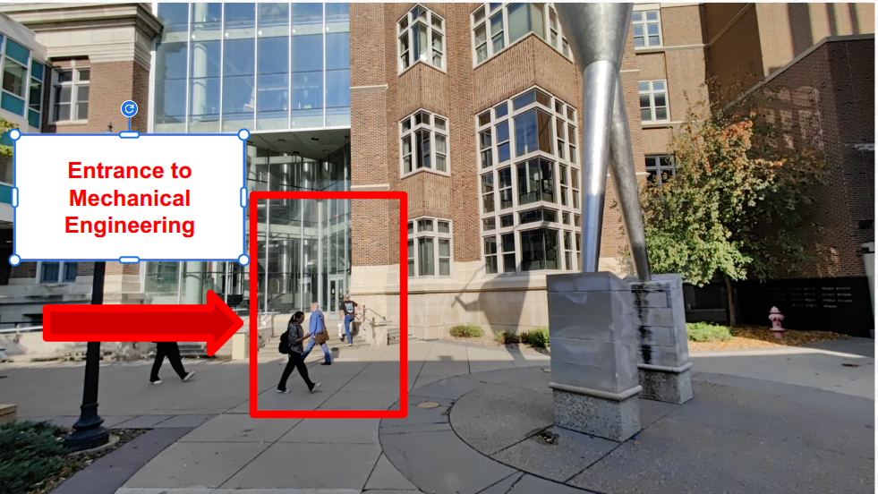
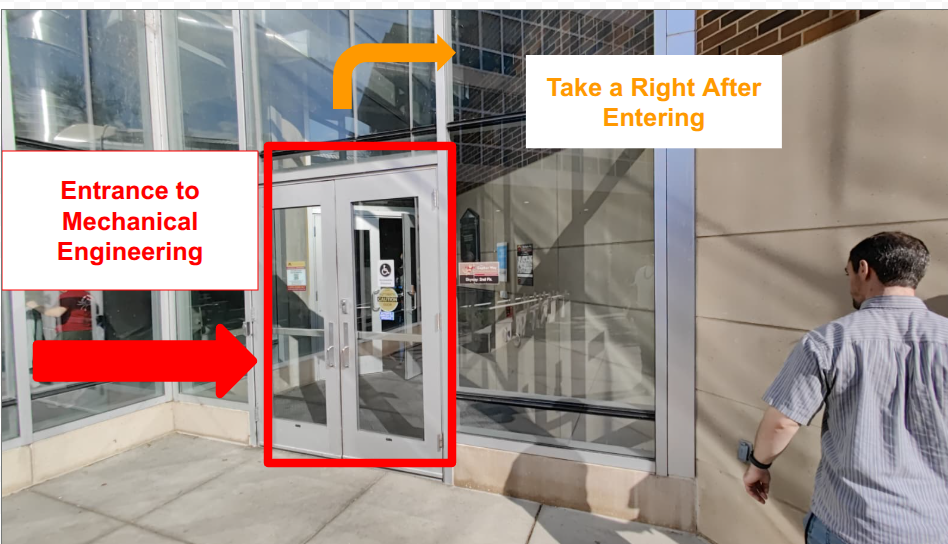
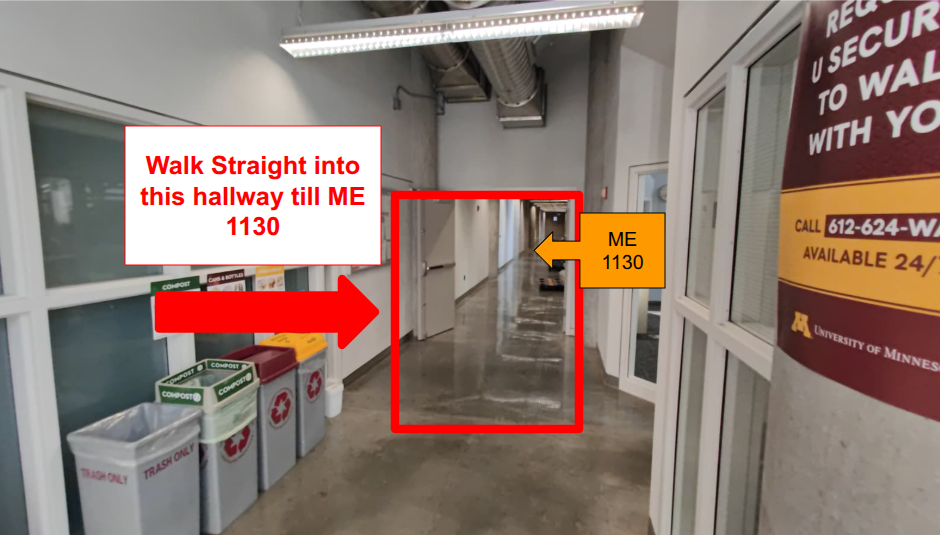
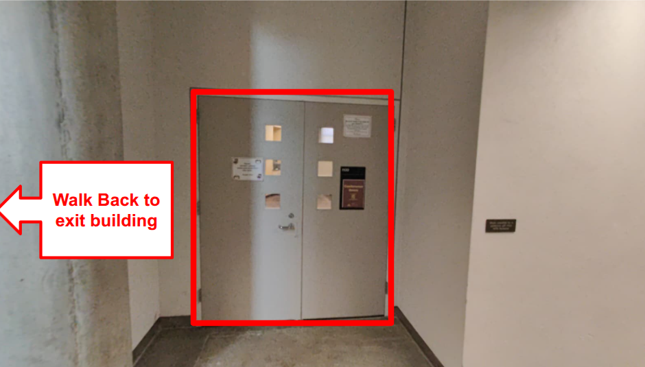
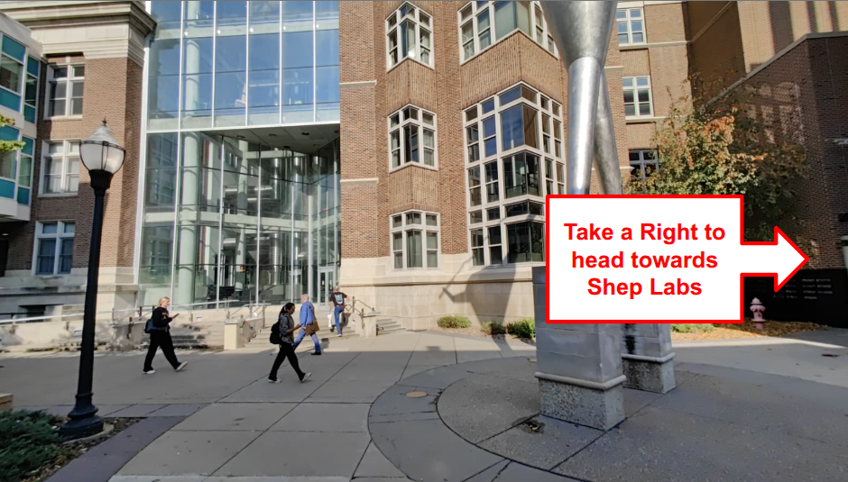
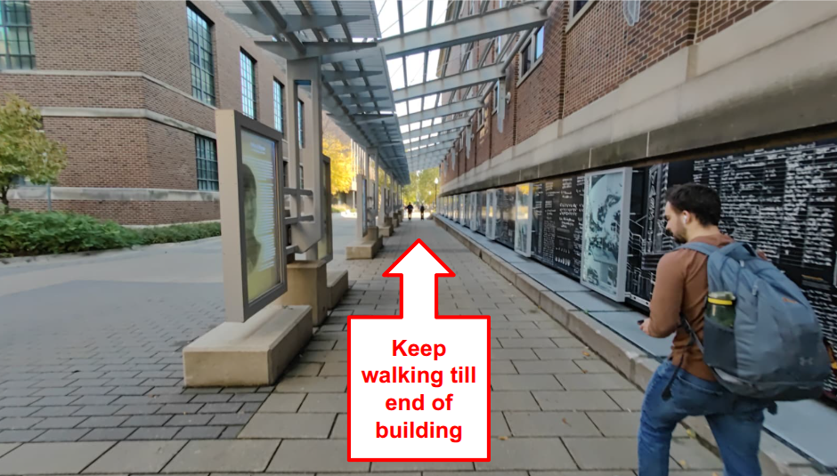
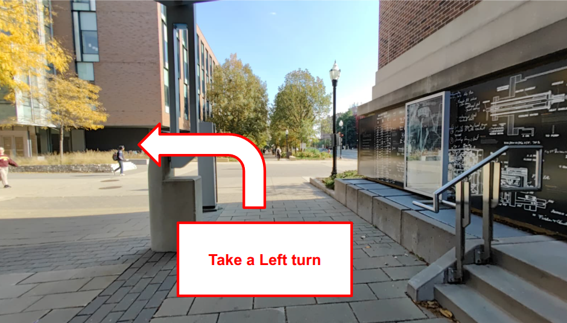
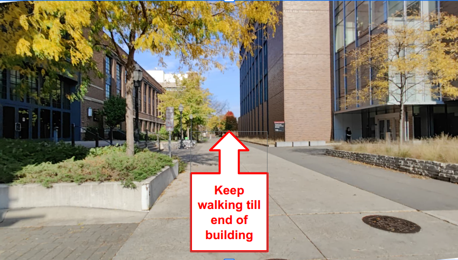
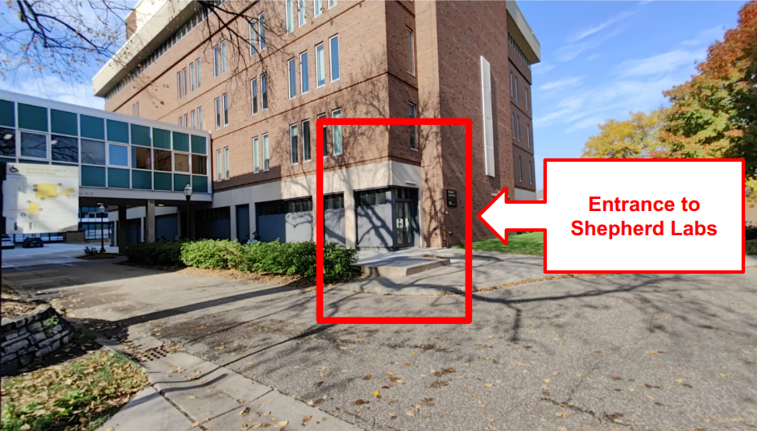
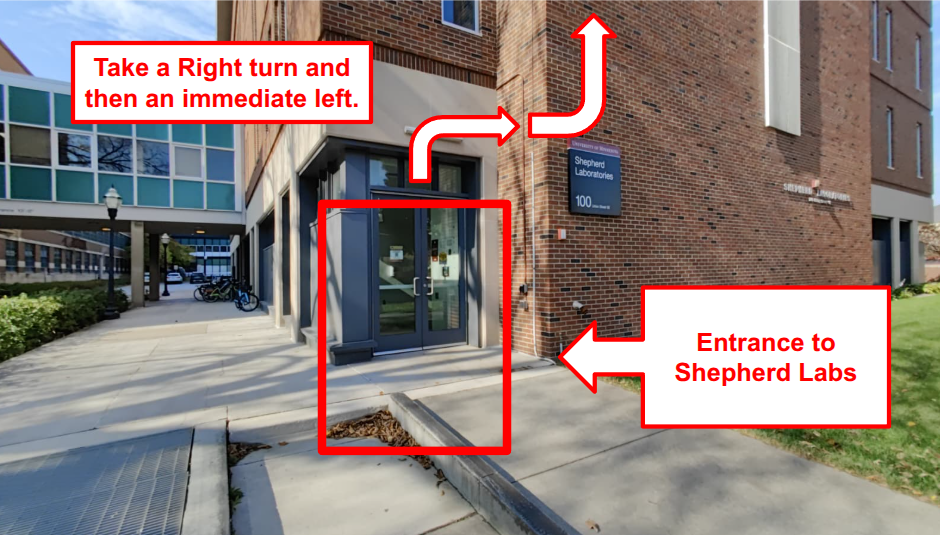
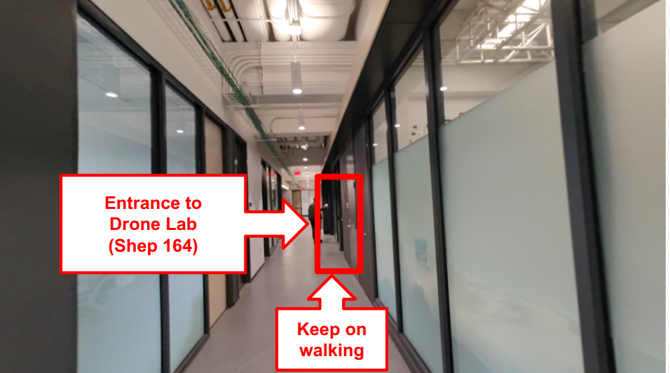
Enter Mechanical Engineering — use the main entrance.
Take a right after entering and follow the corridor.
Walk straight down the hallway till ME 1130 — check-in here.
Walk back to the exit building door to head outside.
Take a right to head towards Shepherd Labs from the exit.
Keep walking till end of building along the covered walkway.
Take a left turn at the end of the walkway.
Keep walking till end of building to reach Shepherd Labs entrance.
Entrance to Shepherd Labs — right turn, then immediate left to enter.
Shepherd Laboratories 100 — enter the building.
Drone Lab (Shep 164) on the left; keep walking for hallway poster boards.